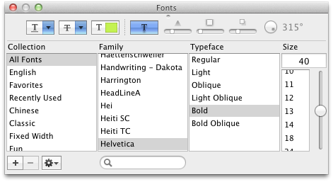
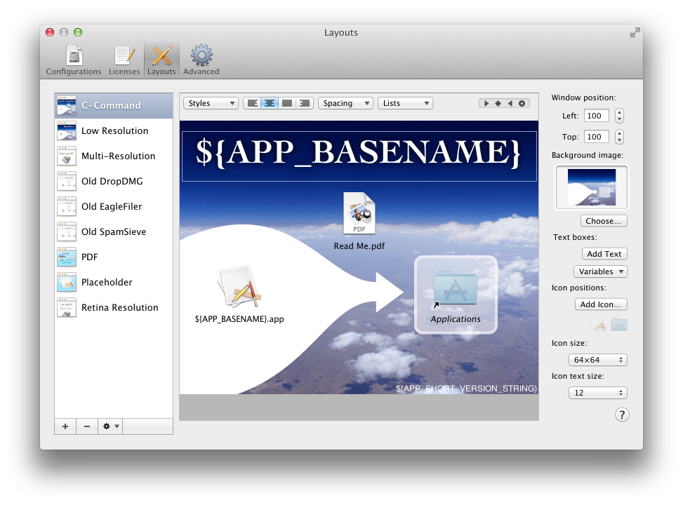

5.3 Layouts
When you double-click a disk image, Mac OS X mounts it and opens a Finder window showing its top-level contents. Layouts let you control the appearance of this window: the window position, background picture, view options, and icon positions. Additionally, when you create a disk image with a layout, DropDMG sets it to automatically open the window when mounting the image or inserting a disc burned from the image.
See the Making Images With Background Pictures section for a tutorial on creating disk images with background pictures and layouts.
Use the + button to create a new layout and the - button or the Delete key to remove one. Several commands are available in the action menu and contextual menu:
- Duplicate Layout
- Create a new layout that matches the selected one.
- Rename Layout
- Change the name of the selected layout. You can also click-and-hold on the name or press the Return or Enter key.
DropDMG automatically saves the layouts that you create, as you edit them. You can also create copies of the layouts outside DropDMG, as described in the Sharing Licenses and Layouts section.
- Window position
- This controls the position of the upper left corner of the window, relative to the upper left corner of the user’s main display (i.e. the Apple menu).
- Background image
Set the background image by dragging an image file onto the well or by clicking the Choose… button. The background image determines the size of the layout. If you do not specify a background image, DropDMG uses a plain white background with dimensions 640×480.
The background image can be a 72 or 144dpi image, a PDF file, or a multi-resolution TIFF file. DropDMG will render a multi-resolution background picture that’s optimized for display on both Retina and non-Retina Macs. DropDMG looks at the background image’s actual resolution (dots per inch) to determine whether to treat it as Retina; it does not, e.g., look for @2x in the filename.
To remove a background image, Control-click and choose Delete Background Image.
Here are some things to consider when choosing the size of your background image:
- It is recommended that you design your background image such that it looks good if the bottom 23 points are hidden. This is because the Finder does not allow the disk image to control whether the window’s path bar is shown, and the bar consumes space that would otherwise be available for the window’s content. DropDMG sets the window size such that, if the user has the path bar turned off, the Finder will show the full background image; if the bar is turned on, the Finder will show all but the bottom 23 points.
- It is recommended that you design your background image such that it looks good if the rightmost 1 point is hidden. This is because DropDMG sizes the mounted disk image window to exactly fit the dimensions of the background image. On Mac OS X 10.7, you will see every pixel of the image. Mac OS X 10.8 through 10.10 draw a 1-point vertical line at the left edge of the window, thus shifting the image to the right, so that the rightmost column is scrolled out of view. Because different versions of the OS display background images in different ways, it is impossible to choose a window size that always looks optimal. DropDMG decides that it is better to hide a column of pixels that most people won’t notice missing than to show an extra column of white pixels that stand out as looking wrong.
- Mac OS X imposes a minimum window width, so choose a background image that’s at least 437 points wide in order to avoid a white bar on the right side of the window.
- Text boxes
Click Add Text to create text boxes that are drawn atop the background image. Click once on a text box to resize it. Double-click to edit its contents. After selecting some text, you can use the Fonts panel to set the font, style, color, and shadow. The ruler lets save favorite styles and adjust the spacing and alignment (left, center, full, or right) of the text.

The Variables pop-down menu lets you add placeholders that DropDMG will fill in when you build the disk image, so that you don’t have to manually update the text in your layout. The supported variables are Application Name (e.g. DropDMG), Application Short Version String (the marketing version from CFBundleShortVersionString), Application Version (the build number from CFBundleVersion), and Date (YYYY-MM-DD) (e.g. the date the disk image was created).
- Icon positions
To add an icon to the layout, drag and drop a file or folder or click the Add Icon… button. The files/folders that you choose here are only used for the purposes of designing the layout, i.e. specifying where each icon goes. The actual contents of the disk image are determined by the source folder that you drag onto DropDMG.
Click the Application Placeholder button to add a special icon to your layout called ${APP_BASENAME}.app. This will set the position of whichever application (or other principal file) is in your source folder, letting you use the same layout to create disk images for multiple applications.
Click the Application Folder button to create a link to the Applications folder. This makes it possible to install an application by dragging its icon onto the Applications icon in the same window. When you create a disk image using the layout, DropDMG will automatically add a symlink to the Applications folder. (This option is not recommended for use with Internet-enabled disk images.)
You can drag and drop to rearrange the icons. By default, DropDMG uses a 16×16 grid so that the icons are aligned with one another. To drag an icon to any position, unconstrained by the grid, hold down the Command key. You can also move the selected icons one point at a time by pressing the arrow keys.
Tip: You can reuse layouts in some interesting ways. For example, you can use the same layout to create disk images with different contents. The layout can contain more icons than are present in any given source folder.
- Icon size
- The icons can be displayed at 16×16, 32×32, 48×48, 64×64, 128×128, 256×256, or 512×512.
- Text size
- The text size can vary from 10 to 16 point.
See also:
- Why doesn’t the file I added show up on the disk image?
- Why don’t the icons appear in the desired positions in the mounted disk image?
Supporting Mac OS X 10.6
Please see the documentation for the DisableRetinaBackgroundPictures esoteric preference.
Supporting Mac OS X 10.5 and Earlier
With the Mac OS X 10.6 Finder, Apple changed the file format that it uses to save a folder’s view options. Previous versions of Mac OS X do not know how to fully read the new format. This means that disk images created on Mac OS X 10.6 (using either the Finder or DropDMG) may not appear exactly as intended when using Mac OS X 10.4 or 10.5. To deploy a disk image for previous versions of Mac OS X, you may wish to create the disk image using DropDMG on Mac OS X 10.5. Another option is to create a read-write disk image, manually tweak its view options on Mac OS X 10.5, and then use DropDMG to convert it to a final format.

